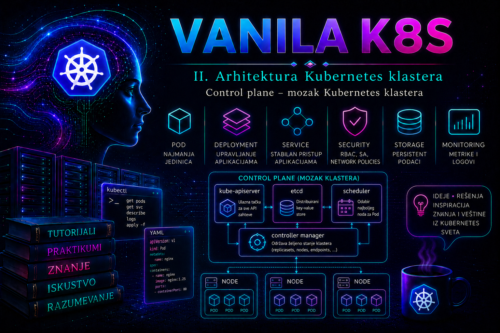

Vanilla Kubernetes

Control plane je upravljački sloj Kubernetes klastera. On prima administrativne i aplikativne zahteve, proverava identitet i ovlašćenja, čuva deklarisano stanje sistema, bira čvorove na kojima će se izvršavati Podovi i pokreće kontrolne petlje koje stvarno stanje neprekidno približavaju željenom. Worker čvorovi izvršavaju radna opterećenja, ali control plane odlučuje šta bi trebalo da postoji, gde bi trebalo da radi i kako sistem treba da reaguje kada se čvor, Pod, servis ili druga komponenta udalji od deklarisanog stanja.
Izraz „mozak klastera” koristan je samo ako se ne shvati kao jedan proces ili jedan server. Control plane je skup međuzavisnih komponenti: kube-apiserver, etcd, kube-scheduler i kube-controller-manager, uz cloud-controller-manager kada klaster koristi integraciju sa podržanim cloud okruženjem. U kubeadm klasteru osnovne komponente se najčešće izvršavaju kao statički Podovi koje lokalni kubelet pokreće na svakom control plane čvoru. Njihovi manifesti nalaze se na lokalnom fajl-sistemu, a ne u Kubernetes API objektima kojima se upravlja kao običnim Deployment resursima.
Uloga control plane sloja
Administrator Kubernetesu ne izdaje niz proceduralnih instrukcija poput „pokreni kontejner, zatim proveri proces, pa ga ponovo pokreni ako se zaustavi”. Umesto toga, preko API-ja opisuje željeno stanje: na primer, Deployment treba da ima tri dostupne replike određene aplikacije. Control plane prihvata taj zahtev, trajno ga zapisuje i angažuje više nezavisnih komponenti da ga sprovedu. Scheduler bira odgovarajuće čvorove, kontroleri stvaraju i prate potrebne objekte, a kubelet na izabranom worker čvoru komunicira sa kontejnerskim runtime-om i ostvaruje lokalno izvršavanje.
Takva arhitektura razdvaja donošenje odluka od izvršavanja. API server predstavlja kontrolisanu ulaznu tačku. etcd je autoritativno skladište stanja. Scheduler rešava problem raspoređivanja. Controller manager pokreće veliki broj kontrolnih petlji. Nijedna od tih komponenti sama ne predstavlja ceo Kubernetes, niti bi administrator trebalo da pokušava da zaobiđe njihove odgovornosti direktnim menjanjem podataka ili ručnim upravljanjem posledicama.
Control plane nije odgovarajuće mesto za redovna aplikativna opterećenja. Kubeadm control plane čvorovima uobičajeno dodeljuje taint koji sprečava raspoređivanje običnih Podova bez odgovarajuće tolerancije. U malom lab klasteru ta zaštita može biti uklonjena radi uštede resursa, ali takva odluka smanjuje izolaciju, povećava mogućnost iscrpljivanja procesora, memorije i diska i nije model koji treba nekritički preneti u produkciju.
kube-apiserver – kontrolisana ulazna tačka
kube-apiserver izlaže Kubernetes HTTP API i predstavlja centralnu komunikacionu tačku control plane-a. kubectl, kubeleti, scheduler, kontroleri, operatori, admission webhook servisi i automatizacioni sistemi pristupaju stanju klastera preko API servera. Ostale komponente ne bi trebalo direktno da menjaju etcd podatke.
Pri obradi zahteva API server najpre uspostavlja bezbednu TLS komunikaciju, zatim autentifikuje klijenta, proverava autorizaciju i primenjuje admission kontrolu. Tek nakon uspešnih provera zahtev može biti validiran i upisan u skladište. Zbog toga odgovor Forbidden ne znači da API server ne radi; često znači da je identitet uspešno prepoznat, ali nema potrebnu RBAC dozvolu. Odgovor Unauthorized češće ukazuje na problem sa autentifikacijom, sertifikatom, tokenom ili drugim akreditivom.
API server izlaže zasebne krajnje tačke /livez i /readyz. Liveness potvrđuje da proces nije u stanju iz kog se ne može oporaviti, dok readiness pokazuje da li instanca trenutno može pravilno da obrađuje saobraćaj. U HA konfiguraciji load balancer treba da šalje nove zahteve samo spremnim instancama. Stariji endpoint /healthz i dalje može postojati radi kompatibilnosti, ali se za savremene provere koriste precizniji /livez i /readyz.
API server može biti živ, ali nespreman zbog problema sa etcd vezom, inicijalizacijom ili zavisnim internim proverama. Zato samo provera TCP porta 6443 nije dovoljan dokaz zdravlja. Otvoren port potvrđuje da nešto sluša, ali ne potvrđuje da API server može da pročita i upiše stanje klastera.
etcd – autoritativno skladište stanja
etcd je distribuirano, konzistentno key-value skladište u kome Kubernetes čuva trajno stanje API objekata. Deployment, Pod specifikacije, ConfigMap objekti, Secret objekti, RBAC pravila, Lease zapisi, podaci o čvorovima i drugi resursi postaju deo stanja koje control plane mora da zaštiti. Gubitak etcd podataka može značiti gubitak konfiguracije klastera čak i kada su kontejneri na worker čvorovima privremeno još aktivni.
etcd koristi konsenzus i zahteva kvorum za promene. U klasteru sa tri člana potreban je kvorum od dva, pa sistem može da podnese gubitak jednog člana. Dodavanje četvrtog člana ne povećava broj istovremenih otkaza koje klaster može da podnese, jer kvorum postaje tri. Zbog toga se za HA uobičajeno koriste neparni brojevi članova, najčešće tri ili pet, uz pažljivo planiranu latenciju, pouzdan disk i mrežu.
etcd je naročito osetljiv na latenciju i zastoj diska. Popunjen fajl-sistem, sporo trajno skladište, veliki broj objekata, prekomerni Event zapisi ili mrežni prekidi između članova mogu se na nivou Kubernetes administratora manifestovati kao spor kubectl, isteci zahteva, neuspešan /readyz, odložene kontrolne petlje ili nemogućnost izmena resursa. Visoka CPU iskorišćenost nije jedini relevantan signal; trajanje fsync operacija, rast baze, broj neuspešnih predloga i stabilnost lidera često su važniji.
Direktno uređivanje etcd podataka nije podržan administratorski postupak za ispravljanje Kubernetes objekata. Promene se sprovode kroz API, a etcd se održava alatima i postupcima koji odgovaraju njegovoj verziji. Kod novijih etcd izdanja operacije obnove i provere snapshot-a obavljaju se alatom etcdutl, dok se online snapshot i provera endpointa obično obavljaju alatom etcdctl. Administrator pre postupka mora proveriti verziju binarnih alata i dokumentaciju tačno korišćenog izdanja.
kube-scheduler – izbor odgovarajućeg čvora
kube-scheduler prati Podove kojima još nije dodeljen čvor. Najpre filtrira čvorove koji ne ispunjavaju zahteve, a zatim rangira prihvatljive kandidate i upisuje odluku o vezivanju Poda za izabrani čvor. Pri tome uzima u obzir zahteve za procesorom i memorijom, node selector i affinity pravila, taint i toleration odnose, topology spread ograničenja, zahteve trajnih volumena i druge scheduling uslove.
Scheduler ne pokreće kontejner i ne premešta već aktivan Pod sa jednog čvora na drugi. Nakon što je spec.nodeName postavljen, lokalni kubelet preuzima odgovornost za dalje izvršavanje. Ako scheduler prestane da radi, postojeći Podovi mogu nastaviti rad, ali novi Podovi i zamenske replike ostaju u stanju Pending bez dodeljenog čvora.
Administrator ne sme svaki Pending Pod automatski pripisati kvaru schedulera. Scheduler može ispravno raditi, ali ne pronaći čvor koji ispunjava zahteve. Komanda kubectl describe pod tada u događajima obično prikazuje razlog: nedovoljno resursa, nepodudarne oznake, netolerisani taint, konflikt volumena ili nepodudarnost sa affinity pravilima. Kvar schedulera se razlikuje po tome što se događaji o pokušajima raspoređivanja ne pojavljuju, više nepovezanih Podova ostaje bez spec.nodeName, a scheduler Pod ili njegovi logovi pokazuju grešku.
kube-controller-manager – kontrolne petlje željenog stanja
kube-controller-manager u jednom procesu pokreće skup kontrolera. Deployment i ReplicaSet kontroleri posredno obezbeđuju potreban broj replika, Node kontroler prati dostupnost čvorova, Job kontroler prati završavanje poslova, EndpointSlice kontroler povezuje Service selektore sa odgovarajućim endpointima, a service account i drugi kontroleri održavaju svoje objekte.
Kontroler posmatra trenutno stanje preko API servera, poredi ga sa željenim stanjem i preduzima korektivnu akciju. Takvo usaglašavanje nije jednokratna operacija. Ako administrator ručno izbriše Pod koji pripada Deployment-u, ReplicaSet kontroler će napraviti novi jer deklarisani broj replika nije promenjen. Ručno popravljanje posledice bez razumevanja vlasničkog lanca često dovodi do toga da Kubernetes „poništi” intervenciju administratora.
U HA control plane-u više instanci scheduler-a i controller manager-a može istovremeno biti pokrenuto, ali se aktivno odlučivanje koordinira izborom lidera. Lease objekti u namespace-u kube-system beleže trenutno vođstvo. Nestabilan izbor lidera može ukazivati na problem sa API dostupnošću, etcd latencijom, mrežom ili opterećenjem control plane čvorova.
cloud-controller-manager i granica cloud integracije
cloud-controller-manager odvaja cloud-specifičnu logiku od osnovnih Kubernetes komponenti. U zavisnosti od implementacije, može upravljati informacijama o čvorovima, rutama i cloud load balancer resursima. On nije obavezan u on-premises klasteru bez podržane cloud integracije, niti Kubernetes samim prisustvom ove komponente dobija funkcije određenog provajdera.
Kada Service tipa LoadBalancer ostane bez spoljne adrese, uzrok može biti cloud controller, njegova IAM dozvola, kvota, mrežna konfiguracija ili nepodržana implementacija, a ne kube-scheduler. Odgovornost se zato dijagnostikuje prema kontroleru koji upravlja konkretnim resursom, događajima na Service objektu i logovima cloud kontrolera.
Način izvršavanja control plane komponenti
Kubeadm na svakom control plane čvoru uobičajeno zapisuje statičke Pod manifeste u direktorijum /etc/kubernetes/manifests. Kubelet nadgleda taj direktorijum i automatski pokreće ili obnavlja Pod kada se manifest promeni. Podovi se u API-ju vide kao mirror Podovi, ali njihovo brisanje komandom kubectl delete pod nije trajno rešenje: kubelet će ponovo prikazati Pod dok lokalni manifest postoji.
sudo ls -l /etc/kubernetes/manifests
sudo grep -E 'image:|--advertise-address|--etcd-servers' \
/etc/kubernetes/manifests/kube-apiserver.yaml
U tipičnoj stacked etcd topologiji direktorijum sadrži manifeste kube-apiserver.yaml, kube-controller-manager.yaml, kube-scheduler.yaml i etcd.yaml. Ručna izmena fajla predstavlja direktnu produkcionu promenu i kubelet je može primeniti gotovo odmah. Ne postoji period za „pregled nacrta” nakon čuvanja. Pre izmene moraju postojati validan backup, plan povratka, rezervna administratorska sesija i potvrda da preostale HA instance mogu nositi saobraćaj.
Manifest se ne sme privremeno kopirati u isti nadgledani direktorijum pod drugim imenom. Kubelet može pokušati da obradi svaki odgovarajući manifest i pokrene duplu komponentu sa konfliktnim portovima ili identitetom. Backup kopija se čuva van /etc/kubernetes/manifests, na primer u kontrolisanom direktorijumu promene.
Dostupnost i HA topologije
Jedan control plane čvor je prihvatljiv za učenje i određena nekritična okruženja, ali predstavlja jedinstvenu tačku otkaza. Produkcioni HA klaster uobičajeno ima najmanje tri control plane čvora iza stabilnog TCP load balancer endpointa. API klijenti i kubeleti koriste zajedničko DNS ime, dok load balancer proverava spremnost pojedinačnih API servera.
Kod stacked topologije svaki control plane čvor istovremeno hostuje lokalnog etcd člana. Rešenje je infrastrukturno jednostavnije, ali gubitak čvora istovremeno smanjuje kapacitet API sloja i etcd članstvo. Kod external etcd topologije etcd radi na zasebnim čvorovima. Time se odvajaju resursi i životni ciklusi, ali se povećavaju broj sistema, mrežne zavisnosti, sertifikati, monitoring i operativna složenost.
HA ne znači da svaki kvar ostaje neprimetan. Klaster sa tri etcd člana može da podnese gubitak jednog, ali drugi kvar pre oporavka prvog gubi kvorum. Tri API servera ne pomažu ako sva tri zavise od nedostupnog etcd klastera, zajedničkog load balancera, istog storage sloja ili istog infrastrukturnog domena otkaza. Administrator zato procenjuje cele lance zavisnosti, a ne samo broj virtuelnih mašina.
Bezbednost i granice ovlašćenja
Control plane obrađuje najosetljivije podatke i privilegovane odluke klastera. Pristup čvorovima preko SSH-a, mogućnost korišćenja /etc/kubernetes/admin.conf, čitanje PKI direktorijuma ili izmena statičkih Pod manifesta praktično predstavljaju administratorski nivo poverenja nad celim klasterom. Takav pristup ne treba davati samo zato što korisniku treba mogućnost pregleda aplikativnih Podova.
Dnevne provere treba obavljati preko najmanje privilegovanog Kubernetes identiteta. Direktan operativni pristup control plane hostu koristi se za održavanje, dijagnostiku koju API ne može da pruži i odobrene promene. Fajl admin.conf ne kopira se na deljene sisteme i ne ugrađuje u automatizaciju. Za automatizaciju se kreira poseban identitet sa precizno ograničenim RBAC pravima i kontrolisanim životnim ciklusom akreditiva.
API audit log, kada je konfigurisan, omogućava dokumentovanje zahteva i odgovora na nivou metapodataka ili detaljnijeg sadržaja, prema audit politici. Preširoka audit politika može stvoriti veliki obim podataka i rizik izlaganja osetljivog sadržaja. Politika, rotacija, centralno čuvanje i pristup logovima moraju biti planirani zajedno.
Simptomi problema i redosled dijagnostike
| Simptom | Verovatna oblast | Prva provera |
|---|---|---|
kubectl vraća timeout ili connection refused |
DNS, load balancer, mreža ili API server | Rezolucija endpointa, TCP 6443, zatim /readyz |
| Čitanje radi, ali izmene sporadično ne uspevaju | etcd latencija, kvorum, API zagušenje ili admission webhook | API verbose odgovor, etcd endpoint status, webhook događaji i metrike |
Novi Podovi ostaju Pending |
Scheduler ili neispunjivi scheduling uslovi | kubectl describe pod, spec.nodeName i scheduler log |
| Obrisani Pod se ne obnavlja | Controller manager, vlasnički objekat ili pauzirani Deployment | OwnerReferences, željeni broj replika, controller manager log |
| API radi, ali jedan control plane Pod nedostaje | Lokalni kubelet, manifest, runtime ili host resursi | systemctl status kubelet, manifest i crictl ps -a |
| Česte promene scheduler ili controller lidera | API/etcd latencija, mrežni prekidi ili preopterećenje | Lease objekti, logovi komponenti i etcd metrike |
Dijagnostika ide od spolja ka unutra: klijentski kontekst i DNS, load balancer, API readiness, Kubernetes objekti, statički Podovi, kontejnerski runtime, kubelet, host resursi i tek zatim dublje etcd stanje. Nasumično restartovanje svih komponenti uklanja tragove, može pogoršati gubitak kvoruma i ne daje pouzdan dokaz uzroka.
Integrisani praktikum – kontrola zdravlja i bezbedna dijagnostika control plane-a
Poslovni i tehnički kontekst. Organizacija koristi kubeadm klaster za internu DevOps platformu. Nakon planiranog održavanja virtuelne infrastrukture potrebno je potvrditi da je HA control plane funkcionalan pre vraćanja klastera u pun produkcioni režim. Praktikum obuhvata kontrolu API dostupnosti, statičkih Podova, liderstva, etcd kvoruma, scheduling-a i kontrolnih petlji, uz ograničen negativni test schedulera na jednom control plane čvoru.
Cilj. Dokazati da zajednički API endpoint radi, da su sva tri control plane čvora dostupna, da etcd ima tri zdrava člana i lidera, da scheduler raspoređuje nove Podove, da controller manager obnavlja obrisanu repliku i da privremeni gubitak jedne scheduler instance ne prekida scheduling u HA klasteru.
Referentno okruženje. Koriste se control plane čvorovi k8s-cp01, k8s-cp02 i k8s-cp03, worker čvorovi k8s-worker01 i k8s-worker02, stacked etcd topologija i zajednički API endpoint k8s-api.lab.example:6443. Administratorska radna stanica ima kubectl i odobren kubeconfig. SSH pristup preko bastion sistema dozvoljen je samo za control plane proveru.
Preduslovi i prava pristupa. Potrebni su pravo čitanja Node, Pod, Event, Lease i Deployment objekata, pravo kreiranja i brisanja resursa u namespace-u cp-validation i odobren sudo pristup na k8s-cp01 za čitanje manifesta, kubelet logova i izvođenje etcd klijenta iz postojećeg etcd kontejnera. Za negativni test potrebna je posebna promena sa dozvolom privremenog premeštanja jednog statičkog manifesta. Test se ne sprovodi ako je bilo koja druga scheduler instanca nezdrava.
-
Potvrditi klijentski kontekst i dozvole.
Pre bilo kakve promene proverava se da li kubeconfig pokazuje na očekivani HA endpoint i da li identitet ima samo potrebna prava.
Validacija: Server mora bitikubectl config current-context kubectl config view --minify -o jsonpath='{.clusters[0].cluster.server}{"\n"}' kubectl auth can-i get nodes kubectl auth can-i get pods --all-namespaces kubectl auth can-i create deployments -n cp-validation kubectl auth can-i delete pods -n cp-validationhttps://k8s-api.lab.example:6443. Prve dve provere treba da vrateyes. Prava u namespace-u mogu vratitinopre njegovog kreiranja ako su dodeljena preko RoleBinding-a koji tek treba primeniti; u ovom praktikumu pretpostavlja se unapred pripremljen test identitet sa odgovarajućim ovlašćenjima. -
Proveriti API dostupnost i readiness.
Komanda
kubectl get --rawkoristi postojeću autentifikaciju i TLS poverenje iz kubeconfig-a, pa je bezbednija od isključivanja provere sertifikata.
Validacija: Završni status zakubectl get --raw='/livez?verbose' kubectl get --raw='/readyz?verbose' kubectl version kubectl cluster-info/livezi/readyzmora bitiok, a pojedinačne provere ne smeju sadržatifailed.kubectl versionmora prikazati server verziju bez timeout-a. Uspešan TCP spoj uz neuspešan/readyzne prihvata se kao zdravo stanje. -
Pregledati čvorove i control plane Podove.
Ovim se proverava registracija čvorova, Ready stanje i prisustvo očekivanih mirror Podova na sva tri control plane čvora.
Validacija: Svih pet čvorova mora bitikubectl get nodes -o wide kubectl get pods -n kube-system -o wide \ --sort-by='.spec.nodeName' kubectl get pods -n kube-system \ -l tier=control-plane -o wideReady. Za svakik8s-cp0Xočekuju se lokalne instance API servera, scheduler-a, controller manager-a i etcd-a. Restart broj se poredi sa prethodnim stanjem; veliki ili brzo rastući broj zahteva dalju analizu čak i kada je trenutni statusRunning. -
Proveriti statičke manifeste i lokalni kubelet na k8s-cp01.
Pristup hostu koristi se da se potvrdi izvor konfiguracije mirror Podova.
Validacija: Kubelet mora bitissh k8s-cp01 sudo systemctl is-active kubelet sudo ls -l /etc/kubernetes/manifests sudo crictl ps --name 'kube-apiserver|kube-scheduler|kube-controller-manager|etcd' sudo journalctl -u kubelet --since '-30 min' --no-pager | tail -n 100active, direktorijum mora sadržati četiri očekivana YAML manifesta, acrictlmora prikazati aktivne control plane kontejnere. U kubelet logu ne sme biti ponavljajućih grešaka pri učitavanju manifesta, pokretanju sandbox-a, mountovanju volumena ili komunikaciji sa runtime-om. -
Proveriti scheduler i controller manager liderstvo.
Lease objekti pokazuju koja instanca trenutno koordinira aktivno vođstvo.
Validacija: Oba Lease objekta moraju imati popunjenkubectl get lease -n kube-system kube-scheduler \ -o custom-columns=NAME:.metadata.name,HOLDER:.spec.holderIdentity,RENEW:.spec.renewTime kubectl get lease -n kube-system kube-controller-manager \ -o custom-columns=NAME:.metadata.name,HOLDER:.spec.holderIdentity,RENEW:.spec.renewTimeHOLDER, a vremeRENEWmora biti skoro. Prazan holder ili zastareo renewTime zahteva proveru logova odgovarajuće komponente i dostupnosti API servera. -
Proveriti etcd endpoint status i kvorum.
Sertifikati se čitaju samo lokalno, a komanda se izvršava iz postojećeg etcd kontejnera na
k8s-cp01. Naziv kontejnera se prvo utvrđuje, ne pretpostavlja.
Validacija: Moraju biti prikazana tri endpointa, tačno jedan lider i uspešna health provera za sva tri člana. Raft indeks treba da bude usklađen ili da pokazuje samo kratkotrajno prihvatljivo odstupanje. Nedostupan jedan član ne znači neposredan gubitak kvoruma, ali blokira nastavak planiranog održavanja dok se redundansa ne obnovi.ETCD_CONTAINER=$(sudo crictl ps --name etcd -q | head -n 1) test -n "$ETCD_CONTAINER" && echo "$ETCD_CONTAINER" sudo crictl exec "$ETCD_CONTAINER" etcdctl \ --endpoints=https://10.10.10.11:2379,https://10.10.10.12:2379,https://10.10.10.13:2379 \ --cacert=/etc/kubernetes/pki/etcd/ca.crt \ --cert=/etc/kubernetes/pki/etcd/healthcheck-client.crt \ --key=/etc/kubernetes/pki/etcd/healthcheck-client.key \ endpoint status --cluster -w table sudo crictl exec "$ETCD_CONTAINER" etcdctl \ --endpoints=https://10.10.10.11:2379,https://10.10.10.12:2379,https://10.10.10.13:2379 \ --cacert=/etc/kubernetes/pki/etcd/ca.crt \ --cert=/etc/kubernetes/pki/etcd/healthcheck-client.crt \ --key=/etc/kubernetes/pki/etcd/healthcheck-client.key \ endpoint health --cluster -w table -
Kreirati izolovan testni namespace i radno opterećenje.
Namespace odvaja validacione objekte od aplikativnih resursa. Deployment koristi mali javno definisan kontejner; u zatvorenom okruženju image se zamenjuje odobrenom kopijom iz internog registra.
Validacija: Deployment mora dostići stanjeexit kubectl create namespace cp-validation cat > /tmp/cp-validation-deployment.yaml <<'EOF' apiVersion: apps/v1 kind: Deployment metadata: name: control-plane-test namespace: cp-validation spec: replicas: 2 selector: matchLabels: app: control-plane-test template: metadata: labels: app: control-plane-test spec: containers: - name: web image: registry.k8s.io/e2e-test-images/agnhost:2.53 args: - netexec - --http-port=8080 ports: - containerPort: 8080 resources: requests: cpu: 10m memory: 16Mi limits: cpu: 100m memory: 64Mi EOF kubectl apply -f /tmp/cp-validation-deployment.yaml kubectl rollout status deployment/control-plane-test \ -n cp-validation --timeout=120s kubectl get pods -n cp-validation -o wide2/2 available, a oba Poda moraju dobiti worker čvor u koloniNODE.ImagePullBackOffpotvrđuje da je scheduling završen, ali ukazuje na problem registra ili mreže; takav rezultat nije potpuna funkcionalna potvrda. -
Potvrditi rad kontrolne petlje.
Briše se jedan Pod kojim upravlja Deployment, ne sam Deployment. Controller manager i ReplicaSet kontroler treba da naprave zamenu.
Validacija: U kratkom roku mora se pojaviti Pod sa novim imenom, zatim preći uOLD_POD=$(kubectl get pods -n cp-validation \ -l app=control-plane-test \ -o jsonpath='{.items[0].metadata.name}') echo "$OLD_POD" kubectl delete pod "$OLD_POD" -n cp-validation kubectl get pods -n cp-validation -wRunningiReady. Posmatranje se prekida saCtrl+C. Konačno stanje proverava se komandom:
Uspeh znači da Deployment ponovo ima dve dostupne replike i da obrisani Pod više ne postoji.kubectl wait --for=condition=Available \ deployment/control-plane-test \ -n cp-validation --timeout=120s kubectl get deployment,replicaset,pod -n cp-validation -
Izvršiti negativni HA test jedne scheduler instance.
Upozorenje: Ovaj korak menja statički manifest i sme se izvoditi samo u odobrenom lab ili kontrolisanom test okruženju. Ne izvodi se u single-control-plane klasteru, tokom drugog incidenta niti bez potvrđenog zdravlja preostalih scheduler instanci. Bezbednija produkciona alternativa je posmatranje planiranog pojedinačnog restarta čvora u okviru odobrenog maintenance postupka.
Validacija: Posle približno jednog kubelet ciklusa scheduler mirror Pod nassh k8s-cp01 sudo install -d -m 0700 /var/backups/kubernetes/cp-validation sudo cp -a /etc/kubernetes/manifests/kube-scheduler.yaml \ /var/backups/kubernetes/cp-validation/kube-scheduler.yaml.pre-test sudo mv /etc/kubernetes/manifests/kube-scheduler.yaml \ /var/backups/kubernetes/cp-validation/kube-scheduler.yaml.disabledk8s-cp01treba da nestane, dok Lease treba da ostane ili pređe na zdravu instancu sa drugog control plane čvora.exit kubectl get pods -n kube-system -o wide | grep kube-scheduler kubectl get lease -n kube-system kube-scheduler \ -o custom-columns=HOLDER:.spec.holderIdentity,RENEW:.spec.renewTime -
Dokazati da scheduling ostaje funkcionalan.
Deployment se skalira sa dve na tri replike. Novi Pod mora biti raspoređen preko preostalog aktivnog scheduler lidera.
Validacija: Sva tri Poda moraju imati popunjenkubectl scale deployment/control-plane-test \ -n cp-validation --replicas=3 kubectl rollout status deployment/control-plane-test \ -n cp-validation --timeout=120s kubectl get pods -n cp-validation \ -o custom-columns=NAME:.metadata.name,NODE:.spec.nodeName,PHASE:.status.phaseNODEi fazuRunning. Ako novi Pod ostane bez čvora, odmah se proveravaju događaji, Lease i scheduler logovi na preostalim čvorovima; test se prekida i manifest vraća. -
Vratiti scheduler manifest i potvrditi oporavak.
Rollback vraća tačno prethodno sačuvan fajl. Ne generiše se novi manifest napamet.
Validacija: Hash vrednosti moraju biti jednake, scheduler Pod nassh k8s-cp01 sudo mv \ /var/backups/kubernetes/cp-validation/kube-scheduler.yaml.disabled \ /etc/kubernetes/manifests/kube-scheduler.yaml sudo sha256sum \ /etc/kubernetes/manifests/kube-scheduler.yaml \ /var/backups/kubernetes/cp-validation/kube-scheduler.yaml.pre-test sudo journalctl -u kubelet --since '-10 min' --no-pager | tail -n 80 exit kubectl get pods -n kube-system -o wide | grep kube-scheduler kubectl get --raw='/readyz?verbose'k8s-cp01mora se vratiti uRunning, a API readiness ostati uspešan. Vraćena standby instanca ne mora odmah postati lider. -
Pregledati relevantne logove i događaje.
Mirror Pod logovi dostupni su preko API-ja dok je API funkcionalan. Kada nije, koriste se
crictl logsi kubelet journal na konkretnom hostu.
Validacija: Scheduler log treba da pokaže pokretanje i učešće u izboru lidera bez ponavljajućih grešaka. Događaji testnog namespace-a treba da dokumentuju kreiranje, scheduling, pokretanje i zamenu Podova. Pojedinačna prolazna poruka tokom kontrolisanog restarta razlikuje se od greške koja se ponavlja i sprečava napredak objekta.kubectl logs -n kube-system kube-scheduler-k8s-cp01 \ --since=20m --tail=200 kubectl logs -n kube-system kube-controller-manager-k8s-cp01 \ --since=20m --tail=200 kubectl get events -n cp-validation \ --sort-by='.metadata.creationTimestamp' kubectl get events -n kube-system \ --sort-by='.metadata.creationTimestamp' | tail -n 50 -
Ukloniti testne objekte.
Cleanup se sprovodi tek nakon prikupljanja izlaza i logova potrebnih za dokaz promene.
Validacija: Poslednja komanda treba da vratikubectl delete namespace cp-validation --wait=true rm -f /tmp/cp-validation-deployment.yaml kubectl get namespace cp-validationNotFound. Backup manifesta na hostu zadržava se prema pravilima evidencije promene, a zatim bezbedno uklanja kada istekne definisani period i kada je zapis promene zatvoren.
Lokacije i svrha logova. Kubelet zapis se u systemd okruženju čita komandom journalctl -u kubelet. Logovi statičkih Podova dostupni su preko kubectl logs -n kube-system dok API radi, odnosno preko crictl logs CONTAINER_ID na control plane hostu kada API nije dostupan. API audit log, ako je omogućen, nalazi se na lokaciji definisanoj parametrom --audit-log-path i koristi se za rekonstrukciju administrativnih API zahteva. Logovi load balancera pokazuju backend health provere i prekide TCP sesija, dok centralni monitoring treba da čuva metrike API servera, schedulera, controller manager-a i etcd-a.
Tipične greške. Forbidden se razlikuje od kvara API-ja jer server odgovara i identitet je obično autentifikovan. Pending sa događajem FailedScheduling najčešće ukazuje na uslove raspoređivanja, dok odsustvo scheduling događaja za više novih Podova može ukazati na scheduler. API readiness greška sa etcd proverom usmerava dijagnostiku ka skladištu, ali zahteva potvrdu endpoint statusom i host metrikama. Nestanak mirror Poda uz postojeći manifest ukazuje na kubelet, runtime ili nevalidan manifest, dok brisanje mirror Poda preko API-ja bez uklanjanja manifesta nije trajna intervencija.
Merljivi kriterijumi prihvatanja. Sva tri API servera moraju biti spremna iza zajedničkog endpointa; pet čvorova mora imati status Ready; sva tri etcd endpointa moraju biti zdrava i imati jednog lidera; scheduler i controller manager Lease moraju imati svež renewTime; testni Deployment mora dostići tri dostupne replike; obrisana replika mora biti automatski zamenjena; scheduling mora ostati funkcionalan tokom gubitka jedne scheduler instance; vraćeni manifest mora imati isti SHA-256 hash kao backup; nakon cleanup-a testni namespace ne sme postojati.
Administratorske prakse
- API dostupnost i latencija. Prate se
/livez,/readyz, stopa grešaka i trajanje API zahteva kroz monitoring i metrike API servera. Provera se obavlja neprekidno, a ručno posle svake promene load balancera, sertifikata, API servera ili etcd-a. Reakciju zahtevaju neuspešan readiness, rast 5xx odgovora ili trajno odstupanje latencije od definisanog SLO-a. Prva reakcija je utvrđivanje da li je problem ograničen na jednu backend instancu. Incident i vremenska linija beleže se u ITSM sistemu, a uspeh se meri dostupnošću endpointa i poštovanjem SLO-a. - Stanje statičkih Podova i restartovanja. Komandom
kubectl get pods -n kube-system, runtime metrikama ijournalctl -u kubeletprati se status svake instance. Monitoring je neprekidan, a ručna kontrola se radi posle održavanja hosta ili kubeleta. CrashLoopBackOff, odsutan mirror Pod ili rast restart broja zahteva reakciju. Prvo se čuvaju logovi i proveravaju manifest, runtime i host resursi; ne restartuju se sve komponente odjednom. Nalazi se upisuju u zapis promene ili incidenta. - etcd zdravlje, kapacitet i kvorum. Prate se endpoint health, lider, promene lidera, veličina baze, disk latencija, fsync trajanje i alarmi. Monitoring je neprekidan, a eksplicitna provera obavezna je pre nadogradnje ili gašenja control plane čvora. Nedostupan član, česte promene lidera, popunjen disk ili značajno povećana latencija zahtevaju zaustavljanje planirane promene. Prva reakcija je očuvanje kvoruma i sprečavanje dodatnog gašenja članova. Rezultati se dokumentuju u evidenciji kapaciteta i održavanja.
- Backup i probni restore etcd-a. Čuva se konzistentan snapshot Kubernetes etcd baze, odgovarajuća PKI dokumentacija i deklarativna konfiguracija potrebna za rekonstrukciju control plane-a. Snapshot se pravi najmanje dnevno i pre svake rizične promene, šifruje i kopira van klastera u kontrolisano skladište sa ograničenim pristupom. Integritet se proverava odgovarajućom
etcdutl snapshot statusoperacijom za instaliranu verziju. Probni restore se periodično izvodi u izolovanom okruženju, nikada preko aktivnog data direktorijuma. Backup je upotrebljiv tek kada obnovljeni etcd može da se pokrene i kada se kontrolni skup očekivanih Kubernetes objekata uspešno pročita. RPO, RTO, hash snapshot-a, verzija alata i rezultat testa beleže se u registru backup poslova i izveštaju disaster recovery testa. - Sertifikati. Rokovi važenja control plane i etcd sertifikata proveravaju se alatima distribucije, na primer
kubeadm certs check-expirationu kubeadm klasteru, najmanje mesečno i pre perioda ograničenih promena. Reakcija se pokreće dovoljno rano da obnova, distribucija i restart pojedinačnih komponenti mogu biti izvedeni kontrolisano. Dokumentuju se vlasnik sertifikata, rok, postupak obnove i validacija TLS veze. - Promene statičkih manifesta. Pre promene čuvaju se originalni fajl van nadgledanog direktorijuma, checksum, trenutno stanje i izlaz readiness provera. Promene se rade na jednom HA čvoru, uz validaciju pre prelaska na sledeći. Svaki readiness pad, sintaksna greška ili nestabilnost zaustavlja rollout. U CMDB ili sistemu upravljanja konfiguracijom dokumentuju se verzija, parametri, čvorovi, odobrenje i rollback. Uspeh znači jednake odobrene konfiguracije i zdrave komponente na svim čvorovima.
- RBAC i privilegovani pristup hostu. Periodično se proveravaju ClusterRoleBinding objekti, pristup
admin.conf, sudo prava i pristup PKI direktorijumu. Pregled se radi najmanje kvartalno i odmah nakon promene radnog mesta ili odlaska zaposlenog. Neopravdanicluster-admin, deljeni kubeconfig ili nepoznat host pristup zahtevaju hitno ograničavanje akreditiva i bezbednosnu analizu. Dokaz pregleda čuva se u sistemu kontrole pristupa, a uspeh se meri brojem uklonjenih nepotrebnih privilegija i odsustvom nepoznatih privilegovanih naloga. - Kapacitet control plane čvorova. Prate se CPU, memorija, load, inode i disk zauzeće, latencija storage-a i mrežna dostupnost. Pragovi se definišu prema SLO-u i istorijskom opterećenju, a ne samo prema generičkom procentu. Nagli rast, trajna zasićenost ili nedostatak prostora zahteva prvo očuvanje API-ja i etcd-a, zatim identifikaciju izvora opterećenja. Trendovi se vode u kapacitivnom planu, a uspeh se meri odsustvom incidenata izazvanih iscrpljivanjem resursa.
Kontrolna lista
- ☐
kubectl config view --minifyprikazuje odobreni zajednički API endpoint. - ☐
/livezi/readyzvraćaju završni statusokbez neuspešnih pojedinačnih provera. - ☐ Svi control plane i worker čvorovi imaju status
Ready. - ☐ Na svakom control plane čvoru postoje očekivani API server, scheduler, controller manager i etcd Podovi.
- ☐ Scheduler i controller manager Lease imaju popunjenog holdera i svež
renewTime. - ☐ etcd endpoint status prikazuje tri zdrava člana, jednog lidera i očuvan kvorum.
- ☐ Novi testni Pod dobija
spec.nodeNamei prelazi uRunning. - ☐ Brisanje jednog Deployment Poda dovodi do automatskog kreiranja zamenske replike.
- ☐ Kubelet log nema ponavljajuće greške učitavanja statičkih manifesta ili rada runtime-a.
- ☐ Postoji aktuelan etcd snapshot sa zabeleženim hashom, verzijom alata i uspešnim testom integriteta.
- ☐ Promena, validacioni izlazi, odstupanja i rollback rezultat upisani su u odobreni ITSM ili change zapis.
- ☐ Privremeni testni namespace i lokalni testni fajlovi uklonjeni su nakon prikupljanja dokaza.
Zaključak
Administrator nakon ove lekcije treba da razume control plane kao skup koordinisanih, ali jasno razdvojenih odgovornosti. API server nije skladište, scheduler nije izvršni agent, controller manager nije univerzalni servis za svaki problem, a etcd nije baza koju treba ručno uređivati. Pouzdana dijagnostika nastaje kada se simptom poveže sa komponentom koja donosi konkretnu odluku i sa zavisnostima od kojih ta komponenta zavisi.
Praktična osposobljenost podrazumeva proveru API readiness-a, mirror Podova, kubeleta, liderstva, etcd kvoruma, scheduling-a i kontrolnih petlji. Administrator mora umeti da razlikuje nedostupan API od neuspešne autorizacije, kvar schedulera od neispunjivog Pod zahteva, kvar kontrolera od pogrešno deklarisanog broja replika i stvarni HA od prividne redundanse koja deli istu tačku otkaza.
Produkcione promene control plane-a zahtevaju backup, proveru redundanse, rad na jednoj instanci, neposrednu validaciju i pripremljen rollback. Posebnu odgovornost nose pristup statičkim manifestima, PKI materijalu, etcd podacima i privilegovanom kubeconfig-u. Te mogućnosti prelaze granicu obične administracije aplikacija i moraju biti ograničene, auditovane i korišćene samo u okviru odobrene promene ili incidenta.
Razlog za eskalaciju postoji kada je ugrožen etcd kvorum, kada više API instanci nije spremno, kada postoji sumnja na korupciju podataka, kompromitovanje administratorskih akreditiva, neuspeh obnove iz snapshot-a, nekontrolisana promena statičkih manifesta ili zavisnost od mrežne, storage, load balancer ili cloud infrastrukture izvan ovlašćenja Kubernetes administratora. Odgovoran administrator tada ne nastavlja eksperimentisanje, već čuva dokaze, stabilizuje preostale zdrave komponente, aktivira odgovarajući operativni tim i dokumentuje svaku preduzetu radnju.